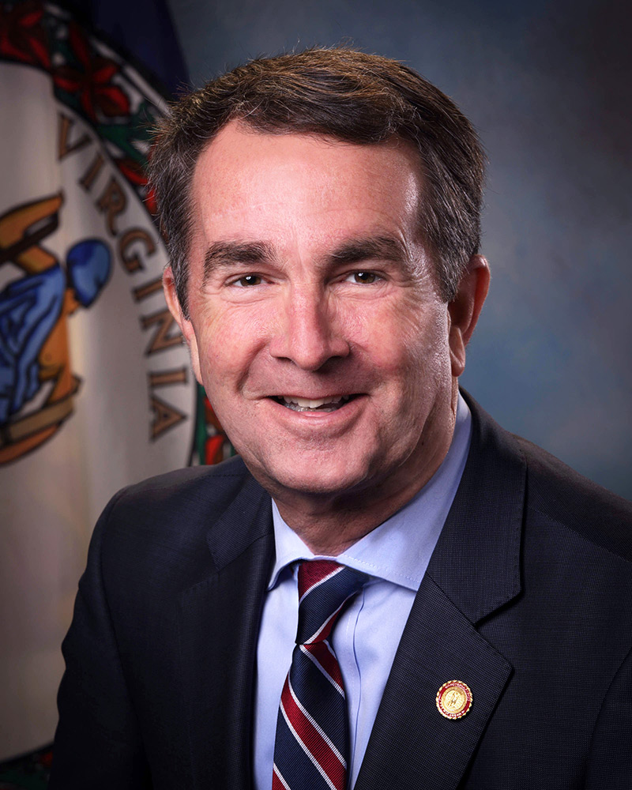

Be informed about the person who is informed about you.
 Governor Ralph Northam, Democratic Party
73rd governor of VA, was born in 1959 (58 years old)
Served in VA State Senate and was the Lieutenant Governor before current office
The Washington Post described him as "a moderate politician who moved to the left for some issues"
His wife's name is Pam, and his kids are Wes and Audrey